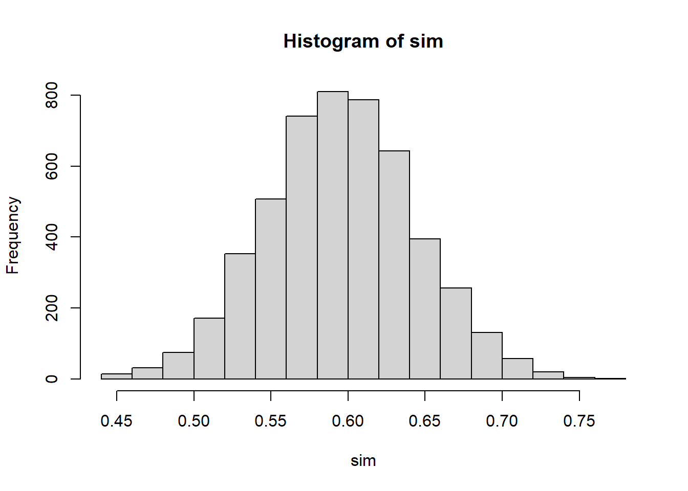
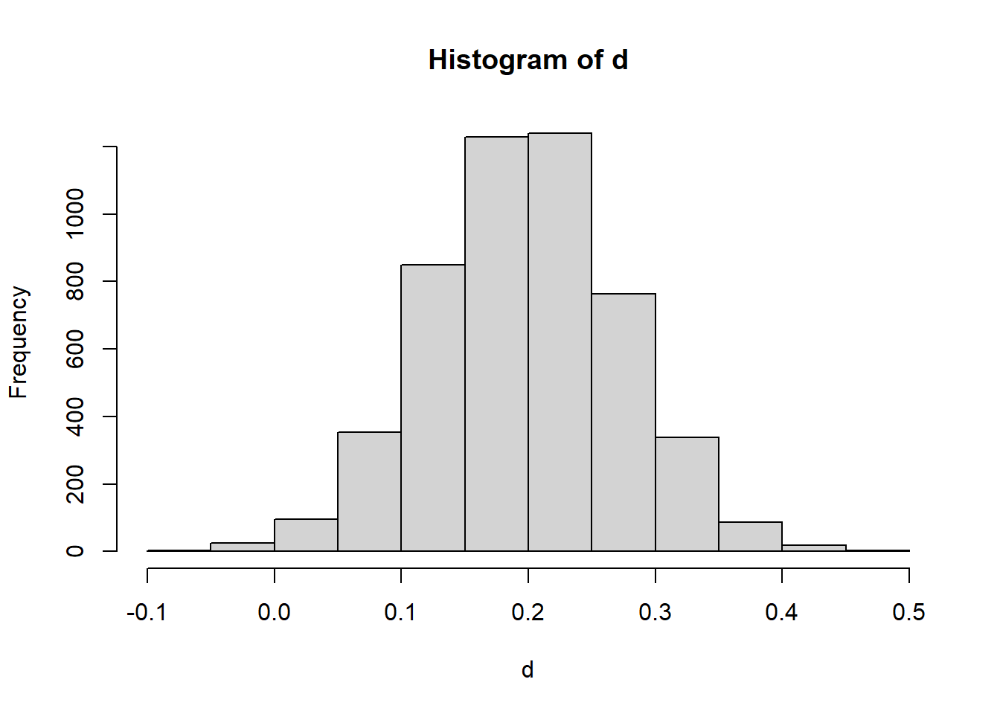

11 Inference About Categorical Data
11.1 Introduction
11.1.1 From Quantitative Responses to Categorical Responses
In previous chapters, inference focused mainly on quantitative responses, where each observation was a numerical measurement.
Examples of quantitative responses include:
- exam score
- blood alcohol concentration
- caloric intake
- plant height
- weight loss
- chemical concentration
For those variables, the main population parameters were usually means and variances. We estimated quantities such as \(\mu\), \(\mu_1-\mu_2\), or \(\sigma^2\).
In this chapter, the response variable is different.
Instead of measuring a numerical value for each observational unit, we record a category.
Examples:
- admitted / not admitted
- success / failure
- employed / unemployed
- disease present / disease absent
- preferred program A / preferred program B
For this kind of response, the main information in the data is not the average numerical value. Instead, the main information is usually:
- how many observations fall into each category
- what proportion of observations fall into a category
- whether category membership is related to another categorical variable
For example, if the response is admitted / not admitted, then the key summary may be the proportion admitted. If the response is disease present / disease absent, then the key summary may be the disease rate. If we observe both gender and admission decision, then the key question may be whether admission status is associated with gender.
This changes both:
- the probability model
- the inferential methods
The overall inferential logic remains familiar, but the details change because categorical responses are naturally summarized by counts and proportions rather than by means.
11.1.2 Why Counts and Proportions Require New Methods
Means are natural summaries for quantitative data.
For categorical data, means are generally not the main focus. Instead, we often study:
- counts
- proportions
- probabilities
- relationships among categorical variables
For example, suppose 72 out of 120 applicants are admitted. The raw count is 72, and the sample proportion is
\[ \hat p = \frac{72}{120}=0.60. \]
This proportion is the natural estimator of the population admission probability.
The mathematical structure is also different.
Many methods in this chapter begin with the:
- Binomial distribution
- Multinomial distribution
- Poisson Distribution
These replace the normal and \(t\) distributions as central tools.
The binomial distribution is useful when the response has two categories, such as success/failure or admitted/not admitted. The multinomial distribution extends this idea to more than two categories. The chi-square distribution appears when comparing observed counts to expected counts.
This is the main conceptual shift:
Inference for quantitative data often focuses on averages. Inference for categorical data often focuses on counts and proportions.
11.1.3 Connection to Previous Inference Chapters
There is a strong conceptual connection with previous inference methods.
We still:
- estimate unknown parameters
- construct confidence intervals
- test hypotheses
- study sampling variability
- interpret results in context
Only the parameter has changed.
Instead of estimating
\[ \mu, \]
we may estimate
\[ p, \]
a population proportion.
For example, \(\mu\) might represent the average BAC of a population of drivers, while \(p\) might represent the proportion of drivers whose BAC exceeds the legal limit. Both are population parameters, but they describe different features of the population.
Inference is still based on the same general structure:
\[ \text{estimator} \rightarrow \text{sampling distribution} \rightarrow \text{pivot quantity} \rightarrow \text{Confidence Intervals \& Hypothesis Testing}. \]
This continuity is important. The ideas are familiar, even though the formulas differ.
For one mean, the estimator was \(\bar X\).
For one proportion, the estimator is \(\hat p\).
For a difference in means, the estimator was \(\bar X-\bar Y\).
For a difference in proportions, the estimator is \(\hat p_1-\hat p_2\).
So this chapter extends the same inferential framework to a new type of data.
11.2 Motivating Example: Admission to a Vocational Program
Suppose a vocational education program wants to study whether gender bias exists in admissions.
Applicants apply to the program, and each applicant receives one of two possible outcomes:
- admitted
- not admitted
The response variable is categorical because it records membership in one of two groups.
In this setting, several different statistical questions are possible. Each question uses categorical data, but the structure of the analysis changes depending on how the question is framed.
This example will be used to motivate the main methods of the chapter.
11.2.1 One Proportion Version
Question:
Is the proportion of admitted applicants who are women equal to 50%?
Parameter:
\[ p=\text{proportion of admitted applicants who are women} \]
This is a one-proportion problem.
Here the data are restricted to admitted applicants, and we classify each admitted applicant as woman or not woman. The main question is whether the proportion of women among admitted applicants differs from a benchmark value, such as 0.50.
This type of question is useful when we want to compare one observed proportion to a hypothesized or expected value.
The null hypothesis might be
\[ H_0:p=0.50. \]
If the observed proportion differs substantially from 0.50, then we ask whether that difference is large enough to be explained by something other than random variation.
11.2.2 Two Proportions Version
Another way to examine the same issue is to compare admission rates across groups.
For example, compare admission rates for two programs:
- Social Sciences
- Engineering
Parameters:
\[ p_1, p_2 \]
where:
- \(p_1\) is the population admission proportion for women applicants in Social Sciences.
- \(p_2\) is the population admission proportion for women applicants in Engineering.
The parameter of interest is
\[ p_1-p_2. \]
This is a two-proportion problem.
This version is often more directly connected to the question of bias because it compares the probability of admission between two groups of applicants.
Interpretation:
- if \(p_1-p_2=0\), the two groups have the same admission rate
- if \(p_1-p_2>0\), Social Science have a higher admission rate for women
- if \(p_1-p_2<0\), Engineering have a higher admission rate for women
The sign and size of the difference are both important.
11.2.3 Contingency Table Version
The same data may also be organized as a two-way table:
| Admitted | Not Admitted | |
|---|---|---|
| Women | ||
| Men |
This table cross-classifies applicants by two categorical variables:
- gender
- admission decision
This leads to contingency table methods.
The main question becomes:
Are gender and admission decision associated?
If the two variables are independent, then knowing an applicant’s gender does not change the probability of admission. If they are associated, then admission outcomes differ across gender groups.
This is the setting for a chi-square test of independence or homogeneity.
11.2.4 Stratified Version
Suppose applications come from multiple vocational specialties:
- welding
- health technology
- electronics
Then stratification may be needed.
This introduces confounding concerns.
For example, suppose women apply more often to programs with lower admission rates and men apply more often to programs with higher admission rates. In that case, the overall admission rates may appear different even if there is no gender bias within any specialty.
This is the key reason stratification matters.
A stratified analysis asks whether the association between gender and admission persists after accounting for the specialty to which the applicant applied.
This is an important practical lesson:
For categorical data, the structure of the table and the design of the study are just as important as the statistical test.
11.3 Categorical Variables and Proportions
11.3.1 Categorical Variables
Definition 11.1 (Categorical Variable) A categorical variable is a variable whose values represent categories or groups rather than numerical measurements.
A categorical variable classifies units into categories.
Examples:
- nominal categories
- ordinal categories
A nominal categorical variable has categories with no natural ordering. Examples include gender, program type, political affiliation, or disease status.
An ordinal categorical variable has categories with a natural ordering. Examples include low/middle/high income, strongly disagree/disagree/neutral/agree/strongly agree, or disease severity levels.
The methods in this chapter are primarily concerned with counts and proportions within categories.
11.3.2 Counts and Relative Frequencies
If \(x\) observations fall in a category out of \(n\) observations, then the count is
\[ x. \]
The relative frequency is
\[ \frac{x}{n}. \]
The count tells us how many observations fall into a category. The relative frequency tells us what fraction of the sample falls into that category.
For example, if 72 out of 120 applicants are admitted, then:
- the count admitted is 72
- the relative frequency admitted is \(72/120=0.60\)
Relative frequencies are often easier to compare across samples because they account for different sample sizes.
For instance, 72 admitted students out of 120 applicants is different from 72 admitted students out of 300 applicants. Counts alone do not tell the full story. Proportions are better for some comparisons.
11.3.3 The Sample Proportion
Definition 11.2 (Sample Proportion) The sample proportion is the fraction of observations in a sample that fall into a category of interest.
The sample proportion is
\[ \hat p=\frac{x}{n}. \]
It estimates the population proportion
\[ p. \]
Here:
- \(x\) is the number of observed successes
- \(n\) is the sample size
- \(\hat p\) is the sample proportion
- \(p\) is the true population proportion
The sample proportion is a statistic because it is computed from sample data. The population proportion is a parameter because it describes the full population.
The inferential goal is to use \(\hat p\) to learn about \(p\).
11.3.4 Connection to the Binomial Distribution
A binary categorical response can be represented using a Bernoulli random variable.
A Bernoulli random variable records whether a single trial is a success or failure. We usually code it as
\[ Y = \begin{cases} 1, & \text{if the outcome is a success},\\ 0, & \text{if the outcome is a failure}. \end{cases} \]
If the probability of success is \(p\), then
\[ Y \sim \text{Bernoulli}(p). \]
For example, in an admissions setting, we could define
\[ Y_i = \begin{cases} 1, & \text{if applicant } i \text{ is admitted},\\ 0, & \text{if applicant } i \text{ is not admitted}. \end{cases} \]
Then \(Y_i\) records the admission outcome for applicant \(i\).
If we observe \(n\) applicants, then we have \(n\) Bernoulli random variables:
\[ Y_1,Y_2,\dots,Y_n. \]
Each \(Y_i\) represents one binary outcome. The total number of successes in the sample is obtained by adding these Bernoulli variables:
\[ X = Y_1 + Y_2 + \cdots + Y_n. \]
Here, \(X\) counts how many successes occurred among the \(n\) observations.
If the Bernoulli variables are independent and all have the same probability of success \(p\), then their sum follows a binomial distribution:
\[ X = \sum_{i=1}^n Y_i \sim \text{Binomial}(n,p). \]
This is the key connection:
A binomial random variable is the sum of independent Bernoulli random variables with the same success probability.
This interpretation is useful because it connects individual binary outcomes to the total count of successes.
For example, if each applicant is either admitted or not admitted, then each admission decision can be viewed as a Bernoulli random variable. The total number admitted is the sum of those Bernoulli variables. If the admission outcomes are independent and each applicant has the same probability \(p\) of being admitted, then the total number admitted follows a binomial distribution.
Once we define
\[ X = \text{number of successes}, \]
the sample proportion is
\[ \hat p = \frac{X}{n}. \]
So the sample proportion is simply the average of the Bernoulli variables:
\[ \hat p = \frac{1}{n}\sum_{i=1}^n Y_i. \]
This gives a very intuitive interpretation of \(\hat p\):
The sample proportion is the sample mean of binary success/failure observations.
This also explains why inference for proportions has the same general logic as inference for means. We are still studying an average, but now the observations are coded as 0s and 1s.
Because
\[ Y_i \sim \text{Bernoulli}(p), \]
we have
\[ E(Y_i)=p \]
and
\[ \mathbb{V}(Y_i)=p(1-p). \]
Therefore, since
\[ \hat p = \frac{1}{n}\sum_{i=1}^n Y_i, \]
we get
\[ E(\hat p)=p \]
and
\[ \mathbb{V}(\hat p)=\frac{p(1-p)}{n}. \]
These results form the foundation for inference about one population proportion.
In summary:
- each binary observation can be modeled as a Bernoulli random variable
- the total number of successes is the sum of independent Bernoulli variables
- that sum follows a binomial distribution
- the sample proportion is the average of the Bernoulli variables
- this leads directly to the mean and variance formulas used for inference about \(p\)
11.4 Inference About One Population Proportion
11.4.1 The Parameter of Interest
The parameter of interest is
\[ p. \]
This is the true population proportion of units that fall into the category of interest.
Examples:
- the proportion of applicants admitted
- the proportion of voters supporting a candidate
- the proportion of patients who recover
- the proportion of products that are defective
- the proportion of students who pass a test
In each case, \(p\) is unknown. We observe a sample and use the sample proportion \(\hat p\) to estimate it.
11.4.2 Point Estimation
The natural estimator of \(p\) is
\[ \hat p. \]
If \(x\) out of \(n\) observations are successes, then
\[ \hat p=\frac{x}{n}. \]
Its expected value is
\[ E(\hat p)=p. \]
So it is unbiased.
This means that, in repeated sampling, the sample proportion is centered at the true population proportion. Individual samples may overestimate or underestimate \(p\), but on average \(\hat p\) targets the correct value.
This is similar to the role played by \(\bar X\) when estimating a population mean.
11.4.3 Standard Error of a Sample Proportion
The sampling variability of the sample proportion is
\[ \mathbb V(\hat p)=\frac{p(1-p)}{n}. \]
The corresponding standard deviation is
\[ \sqrt{\frac{p(1-p)}{n}}. \]
This is the standard deviation of the sampling distribution of \(\hat p\).
Because \(p\) is unknown in practice, we estimate it using \(\hat p\). This gives the estimated standard error
\[ SE(\hat p)=\sqrt{\frac{\hat p(1-\hat p)}{n}}. \]
This standard error measures the typical sample-to-sample variation in \(\hat p\).
Several intuitive facts follow from this formula:
- larger samples produce smaller standard errors
- proportions near 0.5 have the largest variability
- proportions near 0 or 1 have smaller variability
The maximum of \(p(1-p)\) occurs at \(p=0.5\). This fact becomes important when choosing sample sizes.
11.4.4 Confidence Interval for \(p\)
A large-sample confidence interval for \(p\) is
\[ \hat p \pm z_{\alpha/2} \sqrt{\frac{\hat p(1-\hat p)}{n}}. \]
This interval follows the familiar structure:
\[ \text{estimate} \pm \text{critical value} \times \text{standard error}. \]
Here:
- the estimate is \(\hat p\)
- the critical value is \(z_{\alpha/2}\)
- the standard error is \(\sqrt{\hat p(1-\hat p)/n}\)
The confidence interval gives a range of plausible values for the population proportion.
For example, if a 95% confidence interval for an admission proportion is \((0.52,0.68)\), then the data suggest that the population admission rate is plausibly between 52% and 68%.
The interpretation should always be tied to the context.
11.4.5 Hypothesis Testing for \(p\)
To test a claim about a population proportion, we often begin with
\[ H_0:p=p_0. \]
The test statistic is
\[ z= \frac{\hat p-p_0} {\sqrt{p_0(1-p_0)/n}}. \]
Notice that the standard error in the denominator uses \(p_0\), not \(\hat p\).
This is because the test statistic is constructed under the assumption that the null hypothesis is true. If \(H_0\) is true, then the sampling variability of \(\hat p\) is determined by \(p_0\).
The test statistic answers the question:
How many standard errors is the observed sample proportion from the null value?
A large positive or negative value of \(z\) indicates that the observed proportion is far from what would be expected under the null hypothesis.
11.4.6 Conditions for the Large-Sample Approximation
The large-sample methods rely on a normal approximation to the binomial distribution.
A common condition is that the expected number of successes and failures should both be sufficiently large.
Typically check:
\[ np \text{ large} \]
and
\[ n(1-p) \text{ large}. \]
In practice, we often use expected counts at least 5 or 10.
For confidence intervals, since \(p\) is unknown, the check is often based on \(\hat p\):
\[ n\hat p \ge 5 \]
and
\[ n(1-\hat p) \ge 5. \]
For hypothesis tests, the check is usually based on the null value \(p_0\):
\[ np_0 \ge 5 \]
and
\[ n(1-p_0) \ge 5. \]
These conditions matter because the sampling distribution of \(\hat p\) may be skewed when the sample size is small or when \(p\) is close to 0 or 1.
11.4.7 Small Sample Proportions
For small samples, normal approximations may fail.
Exact binomial methods may be preferable.
This is especially true when:
- \(n\) is small
- the number of successes is very small
- the number of failures is very small
- the true proportion may be close to 0 or 1
In those situations, the discreteness of the binomial distribution becomes important. A continuous normal approximation may not describe the sampling distribution well.
The key practical lesson is:
Use large-sample \(z\) methods only when the expected counts are large enough. Otherwise, consider exact binomial methods.
11.4.8 Numerical Example
Suppose:
- 120 applicants
- 72 admitted
Then:
\[ \hat p=72/120=.60. \]
## [1] 0.6The output gives the sample proportion of admitted applicants.
In this case, 60% of the sampled applicants were admitted. This is the point estimate of the true population admission proportion.
The value \(\hat p=0.60\) does not mean the population proportion is exactly 0.60. It means that 0.60 is our sample-based estimate of the unknown population proportion.
To quantify uncertainty, we would construct a confidence interval.
## [1] 0.5123477 0.6876523This interval gives a range of plausible values for the true admission proportion.
If the interval is narrow, the estimate is relatively precise. If the interval is wide, the sample does not provide as much precision.
11.4.9 Simulation Example

This simulation illustrates sampling variability.
Each simulated sample contains 100 binary observations with success probability 0.60. For each sample, the code computes the sample proportion.
The histogram shows how \(\hat p\) varies from sample to sample.
The center of the histogram should be close to 0.60, showing that \(\hat p\) is centered around the true value. The spread of the histogram reflects sampling variability.
This simulation reinforces a key idea:
A sample proportion is not fixed. It changes from sample to sample, even when the true population proportion stays the same.
11.5 Choosing the Sample Size for Estimating a Proportion
11.5.1 Margin of Error
For a confidence interval for \(p\), the margin of error is approximately
\[ E=z_{\alpha/2} \sqrt{\frac{p(1-p)}{n}}. \]
The margin of error measures the maximum distance between the sample proportion and the endpoint of the confidence interval.
A smaller margin of error means a more precise estimate.
From the formula, the margin of error decreases when \(n\) increases. This matches intuition: larger samples provide more information and therefore produce narrower intervals.
11.5.2 Planning Sample Size
To plan a study, we often want to choose \(n\) so that the margin of error is no larger than a desired value \(E\).
Starting from
\[ E=z_{\alpha/2} \sqrt{\frac{p(1-p)}{n}}, \]
we solve for \(n\):
\[ n= \frac{z_{\alpha/2}^2 p(1-p)}{E^2}. \]
This formula gives the approximate sample size needed to estimate a population proportion with margin of error \(E\) at the desired confidence level.
The required sample size increases when:
- the desired margin of error is smaller
- the confidence level is higher
- \(p(1-p)\) is larger
11.5.3 What to Do When \(p\) Is Unknown
The difficulty in sample size planning is that the formula uses \(p\), but \(p\) is exactly what we are trying to estimate.
A common conservative choice is
\[ p=.5 \]
because it maximizes
\[ p(1-p). \]
This gives the largest required sample size. It is called conservative because it protects against underestimating the needed sample size.
If prior information about \(p\) is available, we may use that information. For example, if previous studies suggest that \(p\) is around 0.20, then we could use \(p=0.20\) in planning.
But when no reliable prior estimate is available, \(p=0.5\) is a safe default.
11.5.4 Practical Interpretation
Larger precision requires larger sample size.
If we want a very narrow confidence interval, we need a large sample. If we can tolerate a wider interval, a smaller sample may be sufficient.
Sample size planning is important because collecting data has costs. Larger samples may require more time, money, and effort. The goal is to collect enough data to answer the question with adequate precision, but not more than necessary.
For proportions, this planning step is especially common in surveys, polls, quality-control studies, and public health studies.
11.6 Inference About the Difference Between Two Population Proportions
11.6.1 The Parameter of Interest
When comparing two groups, the parameter of interest is
\[ p_1-p_2. \]
Here:
- \(p_1\) is the population proportion for group 1
- \(p_2\) is the population proportion for group 2
Examples:
- admission rate for women minus admission rate for men
- recovery rate for treatment minus recovery rate for placebo
- defect rate for process 1 minus defect rate for process 2
- support rate for a policy among group 1 minus support rate among group 2
The difference \(p_1-p_2\) measures how far apart the two population proportions are.
11.6.2 Point Estimation
The natural estimator is
\[ \hat p_1-\hat p_2. \]
This simply compares the sample proportions from the two groups.
Interpretation:
- if \(\hat p_1-\hat p_2>0\), group 1 has a larger sample proportion
- if \(\hat p_1-\hat p_2<0\), group 2 has a larger sample proportion
- if \(\hat p_1-\hat p_2\approx 0\), the sample proportions are similar
As with all estimators, this observed difference is subject to sampling variability.
11.6.3 Standard Error of the Difference
For confidence intervals, the estimated standard error is
\[ \sqrt{ \frac{\hat p_1(1-\hat p_1)}{n_1} + \frac{\hat p_2(1-\hat p_2)}{n_2} }. \]
This formula has two pieces because the uncertainty comes from both samples.
The first term measures the sampling variability in \(\hat p_1\). The second term measures the sampling variability in \(\hat p_2\).
Assuming the samples are independent, these variances add.
This is exactly parallel to the logic used when comparing two sample means.
11.6.4 Confidence Interval for \(p_1-p_2\)
A large-sample confidence interval has the form
\[ (\hat p_1-\hat p_2) \pm z_{\alpha/2} \sqrt{ \frac{\hat p_1(1-\hat p_1)}{n_1} + \frac{\hat p_2(1-\hat p_2)}{n_2} }. \]
The interpretation focuses on the difference in population proportions.
If the interval contains 0, then equal proportions remain plausible.
If the interval does not contain 0, then the data provide evidence of a difference between the two population proportions.
The sign of the interval tells us the direction of the difference.
11.6.5 Hypothesis Testing for \(p_1-p_2\)
A common null hypothesis is
\[ H_0:p_1-p_2=0. \]
This is equivalent to
\[ H_0:p_1=p_2. \]
The null hypothesis says that the two groups have the same population proportion.
The alternative hypothesis depends on the research question:
\[ H_a:p_1-p_2>0, \]
or
\[ H_a:p_1-p_2<0, \]
or
\[ H_a:p_1-p_2\ne 0. \]
The hypothesis should be chosen based on the scientific question before looking at the data.
11.6.6 Pooled Proportion Under the Null Hypothesis
Under the null hypothesis, the two population proportions are assumed equal.
Therefore, the two samples are treated as estimating a common proportion.
The pooled proportion is
\[ \hat p= \frac{x_1+x_2}{n_1+n_2}. \]
This pooled estimate is used in the test standard error because, under \(H_0\), both groups share the same true proportion.
The test statistic is
\[ z= \frac{\hat p_1-\hat p_2} {\sqrt{ \hat p(1-\hat p) \left( \frac{1}{n_1}+\frac{1}{n_2} \right) }}. \]
This statistic measures how far the observed difference in sample proportions is from 0, in standard error units, assuming the null hypothesis is true.
11.6.7 Conditions for the Large-Sample Test
Check expected counts in both groups.
For confidence intervals, use the sample proportions to check that each group has enough successes and failures.
For hypothesis tests, use the pooled proportion under the null hypothesis.
A common requirement is that all expected counts be at least 5 or 10.
The reason is the same as in one-proportion inference: the normal approximation works better when the binomial distributions are not too skewed.
11.6.8 Numerical Example
## [1] 0.2This code computes the observed difference in sample proportions.
Here, group 1 has sample proportion \(\hat p_1=48/80=0.60\), while group 2 has sample proportion \(\hat p_2=36/90=0.40\).
The observed difference is
\[ 0.60-0.40=0.20. \]
This suggests that group 1 has a sample proportion 20 percentage points higher than group 2.
To determine whether this difference is statistically meaningful, we need a confidence interval or hypothesis test.
11.6.9 Simulation Example

This simulation shows the sampling distribution of the difference in sample proportions.
Each repetition generates:
- one sample of size 80 from a population with proportion 0.60
- one sample of size 90 from a population with proportion 0.40
- the difference in sample proportions
The histogram shows how \(\hat p_1-\hat p_2\) varies from sample to sample.
The center should be near
\[ 0.60-0.40=0.20. \]
This illustrates that even when the population proportions are fixed, the observed difference varies due to sampling.
11.7 Inference About Several Proportions
11.7.1 Why Several Proportions Require a New Method
When there are more than two categories, comparing proportions one at a time becomes inefficient and can increase the chance of misleading conclusions.
For example, suppose applicants choose among three preferred programs:
- welding
- health technology
- electronics
If we want to test whether the population proportions are equal across these categories, we need a method that handles all categories at once.
This requires a multivariate count framework.
The chi-square goodness-of-fit test is designed for exactly this situation.
11.7.2 Observed Counts and Expected Counts
The observed counts are denoted by
\[ O_i. \]
These are the counts actually observed in category \(i\).
The expected counts are denoted by
\[ E_i. \]
These are the counts we would expect under the null hypothesis.
The basic idea is simple:
Compare what we observed to what the null hypothesis says we should have observed.
If the observed and expected counts are close, the data are consistent with the null hypothesis. If they are very different, the data provide evidence against the null hypothesis.
11.7.3 Chi-Square Goodness-of-Fit Test
The chi-square goodness-of-fit test compares:
- observed counts
- hypothesized counts
It is used when we have one categorical variable with several possible categories and want to test whether the population follows a specified distribution.
Examples:
- Are applicants equally likely to prefer three vocational programs?
- Do survey responses follow a hypothesized distribution?
- Are defects equally likely across several defect types?
- Does a die appear to be fair?
The test statistic measures the overall discrepancy between observed and expected counts.
11.7.4 Hypotheses for a Goodness-of-Fit Test
The null hypothesis is
\[ H_0: \text{specified proportions hold}. \]
For example, if there are three categories and the hypothesized proportions are equal, then
\[ H_0:p_1=p_2=p_3=\frac{1}{3}. \]
The alternative is that at least one population proportion differs from its hypothesized value.
It is important to note that the alternative does not usually say which category differs. It only says that the overall pattern does not match the hypothesized distribution.
11.7.5 The Chi-Square Test Statistic
The test statistic is
\[ \chi^2= \sum \frac{(O_i-E_i)^2}{E_i}. \]
Each term measures the squared difference between observed and expected counts, divided by the expected count.
The statistic becomes large when observed counts are far from expected counts.
The division by \(E_i\) standardizes the differences so that deviations are measured relative to the size of the expected count.
A large chi-square statistic provides evidence against the null hypothesis.
11.7.6 Degrees of Freedom
For a goodness-of-fit test with \(k\) categories, the degrees of freedom are typically
\[ k-1. \]
The reason is that once the total sample size is fixed, only \(k-1\) category counts can vary freely. The final count is determined by the total.
If parameters are estimated from the data, the degrees of freedom may be reduced further. But in the simplest case with fully specified hypothesized probabilities, the degrees of freedom are \(k-1\).
11.7.7 Conditions for the Chi-Square Approximation
Expected counts should not be too small.
A common guideline is that expected counts should generally be at least 5.
This condition matters because the chi-square distribution is an approximation to the sampling distribution of the test statistic. When expected counts are too small, the approximation may be poor.
If expected counts are very small, categories may need to be combined, or exact methods may be considered.
11.7.8 Numerical Example
## [1] 2.24In this example, there are three observed counts:
\[ 32,\ 28,\ 40. \]
The expected counts are equal because the null hypothesis assumes equal proportions:
\[ 100/3,\ 100/3,\ 100/3. \]
The computed statistic measures how far the observed counts are from equal distribution across the three categories.
A small value suggests that the observed counts are close to expected. A large value suggests that the observed distribution differs from the hypothesized distribution.
11.8 Contingency Tables
11.8.1 Two-Way Tables
A contingency table organizes the joint outcomes of two categorical variables.
For example, in the vocational admission example, the two categorical variables might be:
- gender
- admission decision
A two-way table displays the counts for each combination of categories.
This allows us to study whether the distribution of one variable changes across the levels of another variable.
For example, we may ask:
Is the admission distribution the same for women and men?
or
Does gender appear to be associated with admission decision?
11.8.2 Row Percentages and Column Percentages
Row percentages and column percentages are useful summaries, but the correct choice depends on the question being asked.
Row percentages condition on the row category.
Column percentages condition on the column category.
For example, if rows are gender and columns are admission status, row percentages answer:
Among women, what proportion were admitted? Among men, what proportion were admitted?
Column percentages answer:
Among admitted applicants, what proportion were women? Among not admitted applicants, what proportion were women?
Both are valid summaries, but they answer different questions.
A common mistake is to interpret row percentages as if they were column percentages, or the reverse.
11.8.3 Marginal and Conditional Distributions
A marginal distribution describes the distribution of one categorical variable by itself.
For example, the marginal distribution of admission status gives the overall proportion admitted and not admitted, ignoring gender.
A conditional distribution describes the distribution of one variable given a category of another variable.
For example, the conditional distribution of admission status given gender gives the admission proportions separately for women and men.
This distinction is essential.
Many questions about association are really questions about whether conditional distributions differ across groups.
If the conditional admission distributions are the same for women and men, then admission status and gender are not associated. If they differ, then there is an association.
11.8.4 Graphical Displays for Categorical Data
Possible displays include:
- bar charts
- segmented bar charts
- mosaic plots
A bar chart is useful for displaying counts or proportions in categories.
A segmented bar chart is useful for comparing conditional distributions across groups.
A mosaic plot is useful for displaying the structure of a contingency table, especially when there are multiple categorical variables.
Graphs are important because they often reveal patterns before formal tests are applied.
For example, a segmented bar chart can quickly show whether the admission proportions differ by gender.
11.9 Chi-Square Test of Independence
11.9.1 Purpose of the Test
The chi-square test of independence is used to assess whether two categorical variables are associated.
For example:
- Is gender associated with admission decision?
- Is treatment group associated with recovery status?
- Is smoking status associated with disease status?
- Is program preference associated with education level?
The test compares observed counts in a contingency table to the counts expected if the two variables were independent.
11.9.2 Hypotheses
The null hypothesis is
\[ H_0: \text{the two categorical variables are independent}. \]
The alternative hypothesis is
\[ H_a: \text{the two categorical variables are associated}. \]
Independence means that the distribution of one variable does not change across levels of the other variable.
In the admission example, independence would mean that admission status does not depend on gender.
11.9.3 Expected Counts Under Independence
Under independence, the expected count in row \(i\) and column \(j\) is
\[ E_{ij}= \frac{(\text{row total})(\text{column total})}{\text{grand total}}. \]
This formula uses the marginal totals to compute what the table should look like if the variables were independent.
Expected counts are not observed data. They are model-based counts under the null hypothesis.
The chi-square statistic then compares the observed table to this expected table.
11.9.4 Test Statistic
The chi-square test statistic has the same general structure:
\[ \chi^2= \sum \frac{(O-E)^2}{E}. \]
For contingency tables, the sum is taken over all cells in the table.
Large values occur when the observed counts are far from the counts expected under independence.
The degrees of freedom for an \(r \times c\) table are
\[ (r-1)(c-1). \]
11.9.5 Conditions
Expected counts should be sufficiently large.
A common guideline is that expected counts should generally be at least 5.
The observations should also be independent. This means each observational unit should contribute to only one cell of the table.
If the same individual appears in multiple cells, or if observations are naturally paired, then the usual chi-square test of independence may not be appropriate.
11.9.6 Interpretation
A significant result means that the two categorical variables are associated.
However:
Significant does not necessarily mean strong association.
A very large sample can produce a small p-value even when the practical difference between groups is small.
Therefore, after a chi-square test, it is important to examine:
- the actual proportions
- the size of the differences
- the context of the study
- an effect-size measure such as difference in proportions, relative risk, odds ratio, or Cramer’s V
Statistical significance should not be the end of the analysis.
11.9.7 Numerical Example
##
## Pearson's Chi-squared test with Yates' continuity correction
##
## data: M
## X-squared = 3.375, df = 1, p-value = 0.06619This code performs a chi-square test on a \(2\times2\) table.
The output includes the test statistic, degrees of freedom, and p-value.
The p-value tells us whether the observed table is unusual under the assumption of independence.
If the p-value is small, we reject the null hypothesis and conclude that the two categorical variables are associated.
11.10 Chi-Square Test of Homogeneity
11.10.1 Purpose of the Test
The chi-square test of homogeneity compares categorical distributions across different populations or groups.
For example:
- Do different programs have the same distribution of applicant outcomes?
- Do admission outcomes differ across gender groups?
- Do treatment groups have the same recovery distribution?
- Do regions have the same preference distribution?
The test asks whether the distribution of a categorical response is the same across groups.
11.10.2 Difference Between Independence and Homogeneity
The chi-square test of independence and the chi-square test of homogeneity are mathematically similar.
They use the same form of test statistic and the same degrees-of-freedom formula.
The difference is in the study design.
For independence, we usually have one sample and measure two categorical variables on each unit.
For homogeneity, we usually have separate samples from different populations and compare the distribution of one categorical response across those populations.
So the distinction is conceptual and design-based rather than computational.
11.10.3 Hypotheses
The null hypothesis is that the population distributions are equal.
For example:
\[ H_0: \text{the admission outcome distribution is the same for all groups}. \]
The alternative is that at least one group has a different distribution.
The test does not automatically identify which group differs. It only determines whether the overall pattern of counts is inconsistent with equal distributions.
11.10.4 Interpretation
The focus is whether populations differ.
If the test is significant, we should examine the table to determine where the differences occur.
This often involves comparing row percentages or column percentages, depending on the structure of the table.
Again, practical interpretation is essential. A statistically significant result may correspond to a small practical difference if the sample size is very large.
11.11 Measuring Strength of Association
11.11.1 Statistical Significance versus Strength of Association
A small p-value does not measure practical importance.
This is especially important for categorical data.
A chi-square test may tell us that two variables are associated, but it does not tell us how strong that association is.
For example, with a very large sample, even a small difference in proportions can lead to a statistically significant result. But that difference may not be practically meaningful.
Therefore, after testing, we should often report a measure of effect size.
11.11.2 Difference in Proportions
The difference in proportions is a direct effect-size measure.
For two groups, it is
\[ p_1-p_2. \]
In sample data, we estimate it by
\[ \hat p_1-\hat p_2. \]
This measure is easy to interpret because it is expressed in percentage-point units.
For example, if the admission rate is 60% for one group and 40% for another, the difference is 20 percentage points.
This is often the clearest measure for communication.
11.11.3 Relative Risk
The relative risk is
\[ RR=\frac{p_1}{p_2}. \]
It compares two probabilities by ratio.
Interpretation:
- \(RR=1\) means the risks are equal
- \(RR>1\) means group 1 has higher risk
- \(RR<1\) means group 1 has lower risk
For example, if the recovery probability is 0.80 in the treatment group and 0.40 in the control group, then
\[ RR=\frac{0.80}{0.40}=2. \]
This means the recovery probability is twice as high in the treatment group.
Relative risk is common in medical and public health contexts.
11.11.4 Cramer’s V
Cramer’s V is a standardized measure of association based on the chi-square statistic.
It is useful for contingency tables larger than \(2\times2\).
Unlike the chi-square statistic itself, Cramer’s V is scaled so that it is easier to interpret as a strength-of-association measure.
The general idea is:
- values near 0 indicate weak association
- larger values indicate stronger association
Cramer’s V is helpful because the chi-square statistic grows with sample size. A large chi-square value may reflect either strong association or simply a very large sample. Cramer’s V helps separate strength from sample size.
11.12 Odds and Odds Ratios
11.12.1 Odds
The odds of an event are
\[ \text{odds}=\frac p{1-p}. \]
The odds compare the probability that an event occurs to the probability that it does not occur.
For example, if \(p=0.75\), then
\[ \text{odds}=\frac{0.75}{0.25}=3. \]
This means the event is three times as likely to occur as not occur.
Odds are not the same as probability. This distinction is important.
Probability is bounded between 0 and 1. Odds can take any nonnegative value.
11.12.2 Odds Ratio
For a \(2\times2\) table:
| Outcome Yes | Outcome No | |
|---|---|---|
| Group 1 | \(a\) | \(b\) |
| Group 2 | \(c\) | \(d\) |
The odds ratio is
\[ OR=\frac{ad}{bc}. \]
The odds ratio compares the odds of the event in one group to the odds of the event in another group.
It is commonly used in case-control studies, logistic regression, and medical research.
11.12.3 Interpreting Odds Ratios
Interpretation:
- \(OR =1\) means no association
- \(OR >1\) means higher odds in group 1
- \(OR <1\) means lower odds in group 1
For example, \(OR=2\) means the odds are twice as large in group 1 as in group 2.
However, odds ratios can be less intuitive than differences in proportions or relative risks, especially when the event is common. For that reason, interpretation should be careful and tied to the context.
11.12.4 Confidence Interval for an Odds Ratio
Confidence intervals for odds ratios are often built using a log transformation.
This is because the odds ratio is positive and often skewed. Taking the logarithm makes the sampling distribution more symmetric.
The usual strategy is:
- Compute \(\log(OR)\)
- Construct a confidence interval on the log scale
- Exponentiate the endpoints to return to the odds ratio scale
If the confidence interval for the odds ratio contains 1, then no association remains plausible.
If it does not contain 1, then the data provide evidence of an association.
11.12.5 Odds Ratios and Study Design
Odds ratios are especially common in case-control studies.
In a case-control study, researchers often sample individuals based on outcome status:
- cases have the outcome
- controls do not have the outcome
Then they look backward to compare exposure histories.
In this design, relative risk may not be directly estimable because the proportion of cases and controls is fixed by design. However, the odds ratio can still be estimated and interpreted as a measure of association.
11.13 Small Counts and Exact Methods
11.13.1 Why Small Counts Are a Problem
Large-sample approximations may fail when counts are small.
This includes:
- one-proportion \(z\) procedures
- two-proportion \(z\) procedures
- chi-square tests
When expected counts are small, the normal or chi-square approximation may not accurately describe the true sampling distribution.
This can lead to incorrect p-values and confidence intervals.
11.13.2 Fisher’s Exact Test
Fisher’s exact test is an exact method for small \(2\times2\) tables.
It computes the probability of observing a table as extreme as the one observed, conditional on the marginal totals.
Because it does not rely on a large-sample chi-square approximation, it is useful when expected counts are very small.
Fisher’s exact test is especially common in medical studies, small experiments, and rare-event analyses.
11.13.3 Practical Guidance
Use exact methods when expected counts are very small.
A practical approach is:
- use large-sample methods when expected counts are sufficiently large
- use Fisher’s exact test or exact binomial methods when counts are small
- always interpret results in context
The goal is not merely to apply a formula, but to choose a method appropriate for the data structure.
11.14 Combining Several \(2 \times 2\) Tables
11.14.1 Motivation
Sometimes data are organized into several \(2 \times 2\) tables because there is a third variable that defines strata.
For example, in the vocational education example, we may have separate gender-by-admission tables for each specialty:
- welding
- health technology
- electronics
This is important because a third variable may hide or distort the relationship between two categorical variables.
11.14.2 Why Stratification Matters
Pooling can be misleading.
If the relationship between gender and admission differs across specialties, or if applicants are distributed differently across specialties, then the overall table may not tell the full story.
This issue is related to confounding.
A variable is a confounder when it is related to both the explanatory variable and the response variable and can distort the apparent association between them.
Stratification helps us examine the association within more comparable groups.
11.14.3 Cochran-Mantel-Haenszel Idea
The Cochran-Mantel-Haenszel approach combines evidence across strata.
It is designed for settings where we have several \(2\times2\) tables and want to assess the association between two variables while accounting for the stratifying variable.
The main idea is to adjust for stratification rather than simply collapsing all tables into one.
This is especially important when the stratifying variable is a potential confounder.
11.14.4 Practical Interpretation
Stratified analysis adjusts for stratification.
In the vocational program example, it allows us to ask:
Is there evidence of gender bias after accounting for specialty?
This is a more careful question than simply asking whether gender and admission are associated overall.
The main lesson is:
In categorical data analysis, the way categories are grouped and stratified can change the interpretation of the results.
11.15 Categorical Data and Study Design
11.15.1 Surveys and Proportions
Sampling design matters.
If a survey is used to estimate a population proportion, the sample must be representative of the target population.
For example, if we estimate the proportion of voters supporting a candidate, the result depends heavily on how the sample was selected.
Bias in sampling can lead to biased estimates of proportions.
Important issues include:
- nonresponse
- undercoverage
- convenience sampling
- wording of survey questions
- weighting and design effects
A statistically correct formula cannot fix a poorly designed survey.
11.15.2 Experiments and Proportions
Randomization supports causal interpretation.
For example, suppose participants are randomly assigned to treatment and placebo groups, and the response is recovery or no recovery.
Because treatment assignment is randomized, differences in recovery proportions can more plausibly be attributed to the treatment.
In this setting, inference for proportions can support causal conclusions, assuming the experiment was properly conducted.
11.15.3 Observational Studies and Confounding
Association is not automatically causation.
In observational studies, groups are not formed by random assignment. As a result, differences in proportions may be due to confounding variables.
For example, if people who choose one treatment differ systematically from people who choose another treatment, then differences in outcomes may not be caused by the treatment itself.
This is why categorical data analysis must always be interpreted in light of study design.
11.16 What to Check Before Applying Categorical Inference
11.16.1 Study Design
Check how data were collected.
Ask:
- Was the sample random?
- Were groups randomly assigned?
- Is the study observational or experimental?
- Are there possible confounding variables?
- Are the observations independent?
The study design determines what conclusions are justified.
11.16.2 Type of Response
Identify the response structure:
- binary response
- multinomial response
- contingency table
- stratified contingency table
Different structures require different methods.
A one-proportion problem is not the same as a two-proportion problem. A goodness-of-fit test is not the same as a test of independence. A stratified analysis is not the same as a pooled analysis.
Correct method selection begins with correct identification of the data structure.
11.16.3 Sample Size and Expected Counts
Check assumptions.
For large-sample categorical methods, expected counts should generally not be too small.
Small expected counts can make normal and chi-square approximations unreliable.
When counts are small, exact methods may be more appropriate.
11.16.4 Interpretation
Statistical significance and substantive interpretation both matter.
A small p-value indicates evidence against a null hypothesis, but it does not measure practical importance.
Always ask:
- How large is the difference?
- What does it mean in context?
- Is the association practically important?
- Could confounding explain the result?
- Does the study design support causal interpretation?
Good statistical reporting requires more than a test statistic and p-value.
11.17 Reporting Results for Categorical Data
11.17.1 What to Report
Typically report:
- estimate
- confidence interval
- test result
- effect size
- interpretation
For example, when comparing two proportions, report:
- \(\hat p_1\)
- \(\hat p_2\)
- \(\hat p_1-\hat p_2\)
- a confidence interval for \(p_1-p_2\)
- the p-value for the relevant hypothesis test
- a contextual interpretation
For contingency tables, report:
- the table of counts
- row or column percentages
- the chi-square test result
- an effect-size measure if appropriate
- an interpretation of association
11.17.2 Avoiding Common Mistakes
Common mistakes include:
- reporting only p-values
- ignoring effect size
- confusing association and causation
- using large-sample methods with very small counts
- interpreting column percentages as row percentages
- pooling across strata when stratification matters
A strong categorical analysis should connect the statistical result back to the question that motivated the study.
11.18 Research Study
11.18.1 Does Gender Bias Exist in the Selection of Students for Vocational Education?
This section can integrate:
- one proportion methods
- two proportion methods
- contingency tables
- stratified analysis
The central question is whether gender is related to admission into a vocational education program.
A complete analysis should not rely on only one summary.
A careful analysis may proceed as follows:
- Estimate the overall proportion of admitted applicants who are women.
- Compare admission rates for women and men.
- Organize gender and admission status in a contingency table.
- Test whether gender and admission decision are associated.
- Examine whether the association changes after stratifying by specialty.
- Report both statistical significance and practical importance.
This can serve as a unifying case study for the entire chapter.
The most important lesson from this case study is that categorical data analysis depends heavily on how the question is framed.
The same data can support several related but distinct analyses:
- one proportion
- two proportions
- chi-square test
- stratified contingency table analysis
Each answers a slightly different question.
11.19 Summary
Major tools introduced:
- one proportion inference
- two proportion inference
- chi-square methods
- odds ratios
- exact methods
- stratified methods
Major idea:
Categorical inference extends the same logic used throughout previous chapters:
- estimate the relevant parameter
- quantify uncertainty
- test hypotheses
- interpret in context
The main difference is that categorical data are summarized using counts and proportions rather than means and variances.
The chapter also emphasizes that study design matters. The same table of counts can have different interpretations depending on whether the data came from a survey, experiment, observational study, or stratified design.
11.20 Key Formulas
Sample proportion:
\[ \hat p=\frac xn \]
Variance:
\[ \mathbb V(\hat p)=\frac{p(1-p)}n \]
One proportion z statistic:
\[ z= \frac{\hat p-p_0} {\sqrt{p_0(1-p_0)/n}} \]
Difference in proportions:
\[ \hat p_1-\hat p_2 \]
Standard error for a confidence interval for \(p_1-p_2\):
\[ \sqrt{ \frac{\hat p_1(1-\hat p_1)}{n_1} + \frac{\hat p_2(1-\hat p_2)}{n_2} } \]
Pooled proportion for testing \(p_1=p_2\):
\[ \hat p= \frac{x_1+x_2}{n_1+n_2} \]
Relative Risk:
\[ RR=\frac{p_1}{p_2} \]
Odds:
\[ \text{odds}=\frac{p}{1-p} \]
Odds Ratio:
\[ OR=\frac{ad}{bc} \]
Chi-square statistic:
\[ \chi^2= \sum \frac{(O-E)^2}{E} \]
Expected count in a contingency table:
\[ E_{ij}= \frac{(\text{row total})(\text{column total})}{\text{grand total}} \]